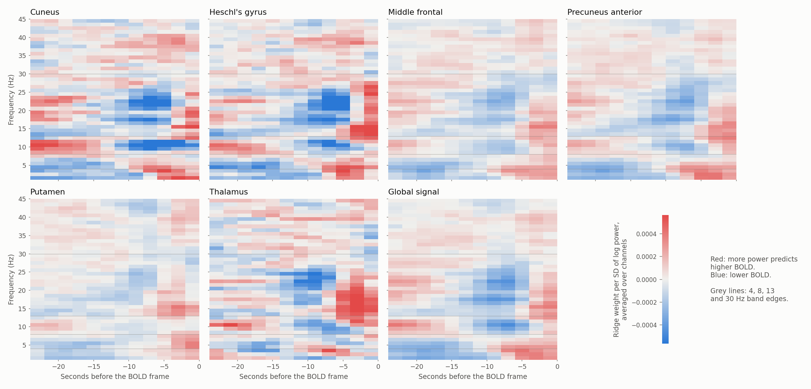
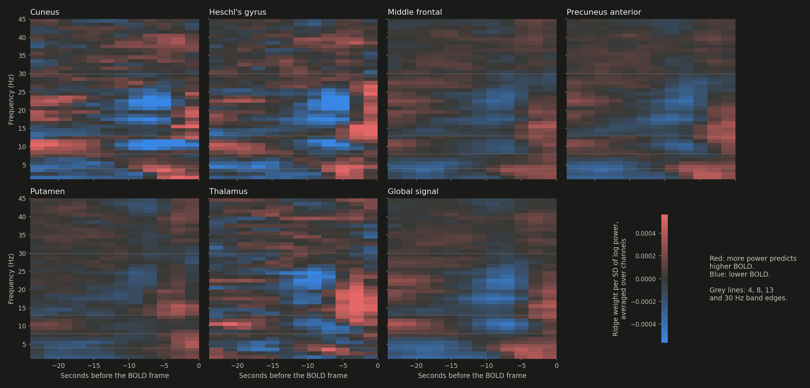

<title>NeuroBOLT Hypothesis Tests</title>
<link rel="preconnect" href="https://fonts.googleapis.com">
<link rel="preconnect" href="https://fonts.gstatic.com" crossorigin>
<link rel="stylesheet" href="https://fonts.googleapis.com/css2?family=IBM+Plex+Mono:wght@400;500&family=IBM+Plex+Sans:wght@400;500;600&family=Source+Serif+4:ital,opsz,wght@0,8..60,400;0,8..60,600;1,8..60,400&display=swap">
<style>
/* Layout: one reading column for prose; the results table and chart break out wider. Same system as NeuroBOLT Reproduction. */
:root {
  --bg: #f5f6f8; --plate: #fcfcfb; --fg: #15181d; --muted: #5a616d; --rule: #dde1e7; --row: #eceff3;
  --neural: #2a78d6; --linear: #eb6834;
  --font-head: "IBM Plex Sans", "Segoe UI", system-ui, sans-serif;
  --font-body: "Source Serif 4", Georgia, "Times New Roman", serif;
  --font-mono: "IBM Plex Mono", ui-monospace, Consolas, monospace;
  --measure: 42rem; --wide: 76rem;
}
@media (prefers-color-scheme: dark) {
  :root:not([data-theme="light"]) {
    --bg: #101215; --plate: #1a1a19; --fg: #e8eaed; --muted: #a3aab5; --rule: #2b3038; --row: #1b1e23;
    --neural: #3987e5; --linear: #d95926; color-scheme: dark;
  }
}
:root[data-theme="dark"] {
  --bg: #101215; --plate: #1a1a19; --fg: #e8eaed; --muted: #a3aab5; --rule: #2b3038; --row: #1b1e23;
  --neural: #3987e5; --linear: #d95926; color-scheme: dark;
}
body { background: var(--bg); color: var(--fg); font-family: var(--font-body); font-size: 1.0625rem; line-height: 1.6; }
.page { padding-inline: 16px; padding-block: 2.5rem 4rem; display: grid; gap: 2.5rem; justify-items: center; }
.col, .wide { width: 100%; min-width: 0; display: grid; gap: 1rem; }
.col { max-width: var(--measure); }
.wide { max-width: var(--wide); }
h1, h2, h3, .eyebrow, th, figcaption, .note, .status { font-family: var(--font-head); }
h1 { font-size: clamp(2rem, 5vw, 2.75rem); line-height: 1.1; font-weight: 600; letter-spacing: -0.01em; margin: 0; text-wrap: balance; }
h2 { font-size: 1.45rem; font-weight: 600; margin: 0; padding-top: 0.5rem; border-top: 1px solid var(--rule); text-wrap: balance; }
h3 { font-size: 1.1rem; font-weight: 600; margin: 0.75rem 0 0; text-wrap: balance; }
p, ul { margin: 0; }
ul { padding-left: 1.25rem; display: grid; gap: 0.5rem; }
.eyebrow { font-size: 0.78rem; font-weight: 500; text-transform: uppercase; letter-spacing: 0.08em; color: var(--muted); }
.standfirst { font-size: 1.2rem; color: var(--muted); }
.status { font-size: 0.9rem; padding: 0.6rem 0.9rem; border: 1px solid var(--rule); border-radius: 6px; background: var(--plate); }
code { font-family: var(--font-mono); font-size: 0.88em; }
a { color: var(--neural); text-underline-offset: 2px; }
a:focus-visible { outline: 2px solid var(--neural); outline-offset: 2px; }
.table-wrap { overflow-x: auto; border: 1px solid var(--rule); border-radius: 6px; background: var(--plate); }
table { border-collapse: collapse; width: 100%; font-family: var(--font-head); font-size: 0.84rem; font-variant-numeric: tabular-nums; }
th, td { padding: 0.45rem 0.65rem; text-align: right; white-space: nowrap; border-bottom: 1px solid var(--rule); }
th { font-weight: 600; color: var(--muted); font-size: 0.76rem; }
th.left, td.left { text-align: left; }
tbody tr:last-child td { border-bottom: none; }
tr.base td { background: var(--row); font-weight: 500; }
tr.partial td { color: var(--muted); }
.ci { color: var(--muted); }
.swatch { display: inline-block; width: 0.6rem; height: 0.6rem; border-radius: 50%; margin-right: 0.45rem; vertical-align: 0.05rem; }
.swatch.neural, .swatch.base { background: var(--neural); }
.swatch.linear { background: var(--linear); }
figure { margin: 0; display: grid; gap: 0.6rem; }
figure .plate { background: var(--plate); border: 1px solid var(--rule); border-radius: 6px; padding: 0.5rem; justify-self: center; max-width: 60rem; width: 100%; }
figure img { display: block; width: 100%; height: auto; max-width: 100%; }
.fig-dark { display: none !important; }
@media (prefers-color-scheme: dark) {
  :root:not([data-theme="light"]) .fig-light { display: none !important; }
  :root:not([data-theme="light"]) .fig-dark { display: block !important; }
}
:root[data-theme="dark"] .fig-light { display: none !important; }
:root[data-theme="dark"] .fig-dark { display: block !important; }
figcaption, .note { font-size: 0.86rem; color: var(--muted); line-height: 1.5; }
footer { border-top: 1px solid var(--rule); padding-top: 1rem; }
</style>

<main class="page">
  <header class="col">
    <span class="eyebrow">Living results · inter-subject prediction</span>
    <h1>NeuroBOLT Hypothesis Tests</h1>
    <p class="standfirst">Which changes make NeuroBOLT predict BOLD better in people it has never seen? Each arm changes one thing, trains on the authors' split and is scored on the same six held-out scans.</p>
    <p class="status">Updated 13 Oct 2026, 18:23 AEDT. Done: 5-fold cross-validation over all 22 people, nested vigilance and band-power models, ridge learning curve, predictability analysis, 33 NeuroBOLT arms on the authors&#x27; split, 21 band-power variants, ridge weight maps, connectivity analysis. No jobs running.</p>
  </header>

  <section class="wide" aria-labelledby="results">
    <div class="col" style="justify-self:center"><h2 id="results">Results</h2>
    <p>Mean test R per region on the six held-out scans (averaged over seeds for NeuroBOLT arms), scored on the frames every arm shares. Greyed rows are still running.</p></div>
    <figure>
      <div class="plate">
        
        
      </div>
      <figcaption>Blue: NeuroBOLT variants. Orange: band-power baselines. Small dots are single seeds; the line marks the NeuroBOLT baseline.</figcaption>
    </figure>
    <div class="table-wrap"><table><thead><tr><th class="left">Arm</th><th>Seeds</th><th>Cuneus</th><th>Heschl's</th><th>Mid. frontal</th><th>Precuneus</th><th>Putamen</th><th>Thalamus</th><th>Global</th><th>Avg. test R</th><th>Avg. val R</th><th>Δ test vs reference (95% CI)</th><th>Δ val</th></tr></thead><tbody><tr class="linear"><td class="left"><span class="swatch linear"></span>Ridge · 1 Hz bins · 24 s / 12 lags · train+val</td><td>1</td><td>0.533</td><td>0.613</td><td>0.521</td><td>0.580</td><td>0.422</td><td>0.476</td><td>0.614</td><td><strong>0.537</strong></td><td>–</td><td>+0.071 <span class="ci">(+0.042 to +0.099)</span></td><td>–</td></tr><tr class="linear"><td class="left"><span class="swatch linear"></span>Ridge · 1 Hz bins · 32 s / 16 lags</td><td>1</td><td>0.538</td><td>0.609</td><td>0.498</td><td>0.567</td><td>0.395</td><td>0.472</td><td>0.597</td><td><strong>0.525</strong></td><td>0.371</td><td>+0.059 <span class="ci">(+0.023 to +0.095)</span></td><td>+0.046</td></tr><tr class="linear"><td class="left"><span class="swatch linear"></span>Ridge · 1 Hz bins · 24 s / 12 lags</td><td>1</td><td>0.534</td><td>0.606</td><td>0.510</td><td>0.566</td><td>0.402</td><td>0.458</td><td>0.597</td><td><strong>0.525</strong></td><td>0.385</td><td>+0.058 <span class="ci">(+0.034 to +0.082)</span></td><td>+0.060</td></tr><tr class="linear"><td class="left"><span class="swatch linear"></span>Ridge · 1 Hz bins · 32 s / 8 lags</td><td>1</td><td>0.528</td><td>0.602</td><td>0.493</td><td>0.559</td><td>0.390</td><td>0.451</td><td>0.587</td><td><strong>0.516</strong></td><td>0.365</td><td>+0.049 <span class="ci">(+0.018 to +0.081)</span></td><td>+0.040</td></tr><tr class="linear"><td class="left"><span class="swatch linear"></span>Ridge · 1 Hz bins · 16 s / 4 lags</td><td>1</td><td>0.503</td><td>0.572</td><td>0.475</td><td>0.536</td><td>0.373</td><td>0.450</td><td>0.570</td><td><strong>0.497</strong></td><td>0.374</td><td>+0.031 <span class="ci">(+0.020 to +0.041)</span></td><td>+0.049</td></tr><tr class="linear"><td class="left"><span class="swatch linear"></span>Low-rank tensor · 1 Hz bins · 24 s / 12 lags</td><td>1</td><td>0.508</td><td>0.577</td><td>0.446</td><td>0.546</td><td>0.375</td><td>0.455</td><td>0.560</td><td><strong>0.495</strong></td><td>0.328</td><td>+0.029 <span class="ci">(+0.006 to +0.053)</span></td><td>+0.003</td></tr><tr class="linear"><td class="left"><span class="swatch linear"></span>Ridge · 5 bands · 32 s / 32 lags</td><td>1</td><td>0.537</td><td>0.568</td><td>0.460</td><td>0.532</td><td>0.350</td><td>0.458</td><td>0.557</td><td><strong>0.495</strong></td><td>0.316</td><td>+0.028 <span class="ci">(-0.006 to +0.062)</span></td><td>-0.009</td></tr><tr class="linear"><td class="left"><span class="swatch linear"></span>Ridge · 5 bands · 32 s / 16 lags</td><td>1</td><td>0.523</td><td>0.572</td><td>0.462</td><td>0.527</td><td>0.352</td><td>0.455</td><td>0.556</td><td><strong>0.493</strong></td><td>0.344</td><td>+0.026 <span class="ci">(+0.001 to +0.052)</span></td><td>+0.019</td></tr><tr class="linear"><td class="left"><span class="swatch linear"></span>Ridge · 5 bands · 64 s / 32 lags</td><td>1</td><td>0.525</td><td>0.575</td><td>0.447</td><td>0.530</td><td>0.350</td><td>0.440</td><td>0.552</td><td><strong>0.488</strong></td><td>0.338</td><td>+0.022 <span class="ci">(-0.008 to +0.052)</span></td><td>+0.013</td></tr><tr class="linear"><td class="left"><span class="swatch linear"></span>Low-rank tensor · 5 bands · 32 s / 16 lags</td><td>1</td><td>0.521</td><td>0.533</td><td>0.474</td><td>0.524</td><td>0.369</td><td>0.444</td><td>0.544</td><td><strong>0.487</strong></td><td>0.346</td><td>+0.021 <span class="ci">(-0.015 to +0.057)</span></td><td>+0.021</td></tr><tr class="linear"><td class="left"><span class="swatch linear"></span>Ridge · 5 bands · 48 s / 24 lags</td><td>1</td><td>0.524</td><td>0.567</td><td>0.445</td><td>0.524</td><td>0.347</td><td>0.447</td><td>0.545</td><td><strong>0.486</strong></td><td>0.339</td><td>+0.019 <span class="ci">(-0.008 to +0.047)</span></td><td>+0.014</td></tr><tr class="neural"><td class="left"><span class="swatch neural"></span>Shared 24 s model · weight decay 0.5</td><td>3</td><td>0.485</td><td>0.550</td><td>0.475</td><td>0.528</td><td>0.373</td><td>0.408</td><td>0.578</td><td><strong>0.485</strong></td><td>0.328</td><td>+0.004 <span class="ci">(+0.002 to +0.007)</span></td><td>-0.012</td></tr><tr class="neural"><td class="left"><span class="swatch neural"></span>NeuroBOLT · 24 s window</td><td>3</td><td>0.490</td><td>0.509</td><td>0.448</td><td>0.527</td><td>0.366</td><td>0.449</td><td>0.580</td><td><strong>0.481</strong></td><td>0.338</td><td>+0.015 <span class="ci">(-0.004 to +0.034)</span></td><td>+0.013</td></tr><tr class="neural"><td class="left"><span class="swatch neural"></span>Shared model · 24 s window</td><td>3</td><td>0.474</td><td>0.542</td><td>0.474</td><td>0.529</td><td>0.368</td><td>0.407</td><td>0.575</td><td><strong>0.481</strong></td><td>0.340</td><td>+0.019 <span class="ci">(-0.005 to +0.042)</span></td><td>+0.009</td></tr><tr class="neural"><td class="left"><span class="swatch neural"></span>Shared model · 28 s window</td><td>3</td><td>0.479</td><td>0.550</td><td>0.472</td><td>0.525</td><td>0.375</td><td>0.396</td><td>0.571</td><td><strong>0.481</strong></td><td>0.304</td><td>+0.018 <span class="ci">(-0.009 to +0.046)</span></td><td>-0.028</td></tr><tr class="neural"><td class="left"><span class="swatch neural"></span>Shared model · 24 s window, no high-pass</td><td>3</td><td>0.470</td><td>0.548</td><td>0.474</td><td>0.527</td><td>0.358</td><td>0.418</td><td>0.569</td><td><strong>0.481</strong></td><td>0.335</td><td>+0.018 <span class="ci">(-0.006 to +0.042)</span></td><td>+0.004</td></tr><tr class="linear"><td class="left"><span class="swatch linear"></span>Ridge · 5 bands · 32 s / 8 lags</td><td>1</td><td>0.511</td><td>0.558</td><td>0.451</td><td>0.515</td><td>0.341</td><td>0.447</td><td>0.539</td><td><strong>0.480</strong></td><td>0.338</td><td>+0.014 <span class="ci">(-0.002 to +0.031)</span></td><td>+0.013</td></tr><tr class="neural"><td class="left"><span class="swatch neural"></span>Shared model · 24 s window · train+val, stop at epoch 5</td><td>3</td><td>0.468</td><td>0.540</td><td>0.467</td><td>0.522</td><td>0.363</td><td>0.421</td><td>0.571</td><td><strong>0.479</strong></td><td>–</td><td>+0.016 <span class="ci">(-0.007 to +0.040)</span></td><td>–</td></tr><tr class="neural"><td class="left"><span class="swatch neural"></span>Shared model · spectral branch only · 24 s window</td><td>3</td><td>0.475</td><td>0.538</td><td>0.467</td><td>0.520</td><td>0.369</td><td>0.410</td><td>0.568</td><td><strong>0.478</strong></td><td>0.330</td><td>+0.016 <span class="ci">(+0.001 to +0.031)</span></td><td>-0.002</td></tr><tr class="neural"><td class="left"><span class="swatch neural"></span>Shared 24 s model · trained on all 65 regions</td><td>3</td><td>0.498</td><td>0.546</td><td>0.465</td><td>0.513</td><td>0.367</td><td>0.380</td><td>0.574</td><td><strong>0.477</strong></td><td>0.317</td><td>-0.004 <span class="ci">(-0.012 to +0.005)</span></td><td>-0.023</td></tr><tr class="neural"><td class="left"><span class="swatch neural"></span>Shared 24 s model · dropout and drop-path 0.3</td><td>3</td><td>0.467</td><td>0.542</td><td>0.467</td><td>0.526</td><td>0.367</td><td>0.399</td><td>0.573</td><td><strong>0.477</strong></td><td>0.339</td><td>-0.004 <span class="ci">(-0.011 to +0.003)</span></td><td>-0.001</td></tr><tr class="linear"><td class="left"><span class="swatch linear"></span>Ridge · per-scan z · 1 Hz bins</td><td>1</td><td>0.473</td><td>0.553</td><td>0.462</td><td>0.491</td><td>0.358</td><td>0.451</td><td>0.533</td><td><strong>0.474</strong></td><td>0.379</td><td>+0.008 <span class="ci">(-0.008 to +0.024)</span></td><td>+0.054</td></tr><tr class="neural"><td class="left"><span class="swatch neural"></span>Shared model · trained on all 65 regions</td><td>3</td><td>0.480</td><td>0.528</td><td>0.456</td><td>0.511</td><td>0.345</td><td>0.435</td><td>0.559</td><td><strong>0.473</strong></td><td>0.329</td><td>+0.011 <span class="ci">(-0.009 to +0.031)</span></td><td>-0.003</td></tr><tr class="neural"><td class="left"><span class="swatch neural"></span>Shared model · no EEG high-pass</td><td>3</td><td>0.454</td><td>0.519</td><td>0.458</td><td>0.520</td><td>0.347</td><td>0.448</td><td>0.556</td><td><strong>0.472</strong></td><td>0.330</td><td>+0.009 <span class="ci">(-0.006 to +0.025)</span></td><td>-0.002</td></tr><tr class="linear"><td class="left"><span class="swatch linear"></span>Ridge · 5 bands · 16 s / 4 lags</td><td>1</td><td>0.470</td><td>0.536</td><td>0.445</td><td>0.506</td><td>0.327</td><td>0.456</td><td>0.546</td><td><strong>0.469</strong></td><td>0.337</td><td>+0.003 <span class="ci">(-0.016 to +0.022)</span></td><td>+0.012</td></tr><tr class="linear"><td class="left"><span class="swatch linear"></span>Ridge · 5 bands · no high-pass</td><td>1</td><td>0.469</td><td>0.535</td><td>0.445</td><td>0.507</td><td>0.327</td><td>0.456</td><td>0.546</td><td><strong>0.469</strong></td><td>0.336</td><td>+0.003 <span class="ci">(-0.015 to +0.022)</span></td><td>+0.011</td></tr><tr class="neural"><td class="left"><span class="swatch neural"></span>Shared model · 20 s window</td><td>3</td><td>0.442</td><td>0.514</td><td>0.457</td><td>0.518</td><td>0.367</td><td>0.418</td><td>0.562</td><td><strong>0.468</strong></td><td>0.341</td><td>+0.006 <span class="ci">(-0.014 to +0.026)</span></td><td>+0.010</td></tr><tr class="base"><td class="left"><span class="swatch base"></span>NeuroBOLT (baseline)</td><td>3</td><td>0.468</td><td>0.520</td><td>0.436</td><td>0.502</td><td>0.327</td><td>0.460</td><td>0.551</td><td><strong>0.466</strong></td><td>0.325</td><td>reference</td><td></td></tr><tr class="neural"><td class="left"><span class="swatch neural"></span>Shared model · train+val, stop at epoch 4</td><td>3</td><td>0.443</td><td>0.505</td><td>0.446</td><td>0.516</td><td>0.357</td><td>0.444</td><td>0.552</td><td><strong>0.466</strong></td><td>–</td><td>+0.004 <span class="ci">(-0.015 to +0.022)</span></td><td>–</td></tr><tr class="neural"><td class="left"><span class="swatch neural"></span>Shared model · no layer-wise LR decay</td><td>3</td><td>0.457</td><td>0.508</td><td>0.450</td><td>0.506</td><td>0.345</td><td>0.446</td><td>0.542</td><td><strong>0.465</strong></td><td>0.330</td><td>+0.002 <span class="ci">(-0.002 to +0.007)</span></td><td>-0.002</td></tr><tr class="neural"><td class="left"><span class="swatch neural"></span>Shared model · no pretraining</td><td>3</td><td>0.452</td><td>0.511</td><td>0.445</td><td>0.509</td><td>0.341</td><td>0.446</td><td>0.546</td><td><strong>0.464</strong></td><td>0.320</td><td>+0.002 <span class="ci">(-0.011 to +0.015)</span></td><td>-0.012</td></tr><tr class="neural"><td class="left"><span class="swatch neural"></span>Shared model · AdamW β₂ 0.99</td><td>3</td><td>0.449</td><td>0.503</td><td>0.450</td><td>0.506</td><td>0.350</td><td>0.448</td><td>0.544</td><td><strong>0.464</strong></td><td>0.332</td><td>+0.002 <span class="ci">(-0.001 to +0.004)</span></td><td>+0.000</td></tr><tr class="linear"><td class="left"><span class="swatch linear"></span>Ridge · per-scan z · 32 s / 8 lags</td><td>1</td><td>0.481</td><td>0.545</td><td>0.441</td><td>0.505</td><td>0.336</td><td>0.424</td><td>0.511</td><td><strong>0.463</strong></td><td>0.342</td><td>-0.003 <span class="ci">(-0.021 to +0.016)</span></td><td>+0.017</td></tr><tr class="neural"><td class="left"><span class="swatch neural"></span>Shared model · no window baseline</td><td>3</td><td>0.443</td><td>0.501</td><td>0.449</td><td>0.507</td><td>0.351</td><td>0.446</td><td>0.543</td><td><strong>0.463</strong></td><td>0.332</td><td>+0.000 <span class="ci">(-0.000 to +0.001)</span></td><td>+0.000</td></tr><tr class="neural"><td class="left"><span class="swatch neural"></span>NeuroBOLT · one model for 7 ROIs</td><td>3</td><td>0.443</td><td>0.501</td><td>0.449</td><td>0.507</td><td>0.351</td><td>0.445</td><td>0.543</td><td><strong>0.462</strong></td><td>0.332</td><td>-0.004 <span class="ci">(-0.024 to +0.017)</span></td><td>+0.007</td></tr><tr class="neural"><td class="left"><span class="swatch neural"></span>Shared model · BatchNorm on LaBraM branch</td><td>3</td><td>0.438</td><td>0.508</td><td>0.448</td><td>0.508</td><td>0.355</td><td>0.436</td><td>0.543</td><td><strong>0.462</strong></td><td>0.331</td><td>-0.000 <span class="ci">(-0.009 to +0.009)</span></td><td>-0.000</td></tr><tr class="neural"><td class="left"><span class="swatch neural"></span>Shared model · learned scale weights</td><td>3</td><td>0.442</td><td>0.500</td><td>0.449</td><td>0.506</td><td>0.351</td><td>0.445</td><td>0.542</td><td><strong>0.462</strong></td><td>0.331</td><td>-0.000 <span class="ci">(-0.001 to +0.000)</span></td><td>-0.001</td></tr><tr class="neural"><td class="left"><span class="swatch neural"></span>Shared model · spectral branch only</td><td>3</td><td>0.450</td><td>0.501</td><td>0.445</td><td>0.502</td><td>0.349</td><td>0.446</td><td>0.536</td><td><strong>0.461</strong></td><td>0.331</td><td>-0.001 <span class="ci">(-0.014 to +0.012)</span></td><td>-0.001</td></tr><tr class="neural"><td class="left"><span class="swatch neural"></span>Shared model · lr 1e-4</td><td>3</td><td>0.442</td><td>0.497</td><td>0.447</td><td>0.508</td><td>0.350</td><td>0.437</td><td>0.544</td><td><strong>0.461</strong></td><td>0.340</td><td>-0.002 <span class="ci">(-0.013 to +0.009)</span></td><td>+0.008</td></tr><tr class="linear"><td class="left"><span class="swatch linear"></span>Boosted trees · 32 s / 16 lags</td><td>1</td><td>0.501</td><td>0.527</td><td>0.430</td><td>0.532</td><td>0.257</td><td>0.378</td><td>0.552</td><td><strong>0.454</strong></td><td>0.306</td><td>-0.012 <span class="ci">(-0.073 to +0.048)</span></td><td>-0.019</td></tr><tr class="linear"><td class="left"><span class="swatch linear"></span>Ridge · per-scan z-scored</td><td>1</td><td>0.450</td><td>0.517</td><td>0.434</td><td>0.477</td><td>0.312</td><td>0.451</td><td>0.498</td><td><strong>0.448</strong></td><td>0.337</td><td>-0.018 <span class="ci">(-0.041 to +0.005)</span></td><td>+0.012</td></tr><tr class="neural"><td class="left"><span class="swatch neural"></span>Shared model · 32 s window</td><td>3</td><td>0.476</td><td>0.512</td><td>0.436</td><td>0.503</td><td>0.333</td><td>0.317</td><td>0.551</td><td><strong>0.447</strong></td><td>0.310</td><td>-0.016 <span class="ci">(-0.047 to +0.016)</span></td><td>-0.022</td></tr><tr class="neural"><td class="left"><span class="swatch neural"></span>Shared model · log spectra</td><td>3</td><td>0.404</td><td>0.485</td><td>0.439</td><td>0.489</td><td>0.337</td><td>0.420</td><td>0.516</td><td><strong>0.441</strong></td><td>0.337</td><td>-0.021 <span class="ci">(-0.046 to +0.003)</span></td><td>+0.006</td></tr><tr class="linear"><td class="left"><span class="swatch linear"></span>Boosted trees · 16 s / 4 lags</td><td>1</td><td>0.442</td><td>0.507</td><td>0.376</td><td>0.472</td><td>0.176</td><td>0.383</td><td>0.527</td><td><strong>0.412</strong></td><td>0.282</td><td>-0.054 <span class="ci">(-0.128 to +0.019)</span></td><td>-0.043</td></tr><tr class="neural"><td class="left"><span class="swatch neural"></span>Shared model · 8 s window</td><td>3</td><td>0.354</td><td>0.414</td><td>0.330</td><td>0.378</td><td>0.277</td><td>0.378</td><td>0.404</td><td><strong>0.362</strong></td><td>0.243</td><td>-0.100 <span class="ci">(-0.130 to -0.071)</span></td><td>-0.088</td></tr><tr class="neural"><td class="left"><span class="swatch neural"></span>Shared model · LaBraM branch only, no layer decay</td><td>3</td><td>0.229</td><td>0.213</td><td>0.181</td><td>0.192</td><td>0.081</td><td>0.116</td><td>0.224</td><td><strong>0.177</strong></td><td>0.095</td><td>-0.286 <span class="ci">(-0.332 to -0.240)</span></td><td>-0.237</td></tr><tr class="neural"><td class="left"><span class="swatch neural"></span>Shared model · LaBraM branch only, scratch + BatchNorm</td><td>3</td><td>0.237</td><td>0.195</td><td>0.124</td><td>0.175</td><td>0.080</td><td>0.154</td><td>0.200</td><td><strong>0.167</strong></td><td>0.070</td><td>-0.296 <span class="ci">(-0.328 to -0.264)</span></td><td>-0.262</td></tr><tr class="neural"><td class="left"><span class="swatch neural"></span>Shared model · LaBraM branch only, from scratch</td><td>3</td><td>0.244</td><td>0.187</td><td>0.128</td><td>0.171</td><td>0.061</td><td>0.133</td><td>0.195</td><td><strong>0.160</strong></td><td>0.051</td><td>-0.303 <span class="ci">(-0.333 to -0.272)</span></td><td>-0.280</td></tr><tr class="neural"><td class="left"><span class="swatch neural"></span>Shared model · LaBraM branch only</td><td>3</td><td>0.070</td><td>0.103</td><td>-0.007</td><td>0.003</td><td>-0.044</td><td>0.021</td><td>0.027</td><td><strong>0.024</strong></td><td>0.030</td><td>-0.438 <span class="ci">(-0.484 to -0.392)</span></td><td>-0.302</td></tr><tr class="neural"><td class="left"><span class="swatch neural"></span>Shared model · LaBraM branch only, BatchNorm</td><td>3</td><td>0.111</td><td>0.010</td><td>-0.026</td><td>0.060</td><td>-0.034</td><td>0.008</td><td>0.024</td><td><strong>0.022</strong></td><td>0.011</td><td>-0.440 <span class="ci">(-0.490 to -0.391)</span></td><td>-0.320</td></tr><tr class="neural partial"><td class="left"><span class="swatch neural"></span>NeuroBOLT · 32 s window</td><td>1</td><td>0.473</td><td>0.482</td><td>0.445</td><td>–</td><td>–</td><td>–</td><td>–</td><td><strong>–</strong></td><td>–</td><td>–</td><td>–</td></tr></tbody></table></div>
    <p class="note">Δ is paired by region and held-out scan, against the per-region NeuroBOLT baseline (shared-model arms: against the shared 7-region baseline); its 95% CI is a t-interval over the six held-out scans (five people), so differences under about 0.02 are hard to tell apart from noise. Decisions use the validation column first.</p>
  </section>

  <section class="col" aria-labelledby="findings">
    <h2 id="findings">Findings so far</h2>
    <h3>Across all 22 people, ridge beats NeuroBOLT, and the authors' split is the easiest</h3>
<ul><li>The comparisons below use the authors' single split, whose six held-out scans come from only five people. To test them on everyone, the best ridge and the shared NeuroBOLT (16 s and 24 s windows, three seeds each) were rerun in a 5-fold, subject-grouped cross-validation (<code>scan_split_cv5.xlsx</code>). Fold 1 is the authors' split, so all 29 scans and all 22 people are held out exactly once.</li><li><strong>Ridge beats NeuroBOLT for nearly everyone.</strong> It leads the 24 s NeuroBOLT by 0.045 (95% CI +0.023 to +0.067, 19 of 22 people) and the 16 s NeuroBOLT by 0.058 (+0.037 to +0.080, 20 of 22 people), and it wins in every fold.</li><li><strong>The 24 s window's gain is smaller across everyone:</strong> +0.013, with an interval that includes zero (−0.003 to +0.029, 12 of 22 people).</li><li><strong>The authors' split is by far the easiest of the five folds.</strong> Its held-out people score 0.46–0.52; the other folds score 0.19–0.40. Averaged over all 22 people, NeuroBOLT reaches about 0.32, well below the 0.473 the paper reports from that one split. Part of the gap may come from each fold's training people, but the paper's inter-subject figure should not be read as typical.</li></ul>
<div class="table-wrap"><table><thead><tr><th class="left">5-fold CV, 29 scans, 22 people</th><th>Cuneus</th><th>Heschl's</th><th>Mid. frontal</th><th>Precuneus</th><th>Putamen</th><th>Thalamus</th><th>Global</th><th>Avg. R over people (95% CI)</th></tr></thead><tbody><tr><td class="left"><strong>Ridge, 1 Hz bins, 24 s / 12 lags</strong></td><td>0.402</td><td>0.463</td><td>0.339</td><td>0.398</td><td>0.270</td><td>0.342</td><td>0.453</td><td><strong>0.381</strong> (0.306 to 0.456)</td></tr><tr><td class="left">NeuroBOLT shared model, 24 s</td><td>0.344</td><td>0.412</td><td>0.304</td><td>0.367</td><td>0.240</td><td>0.276</td><td>0.409</td><td>0.336 (0.266 to 0.405)</td></tr><tr><td class="left">NeuroBOLT shared model, 16 s</td><td>0.304</td><td>0.396</td><td>0.287</td><td>0.349</td><td>0.243</td><td>0.296</td><td>0.385</td><td>0.323 (0.255 to 0.390)</td></tr></tbody></table></div>
<div class="table-wrap"><table><thead><tr><th class="left">Fold</th><th>Held-out people</th><th>Ridge</th><th>NeuroBOLT 24 s</th><th>NeuroBOLT 16 s</th></tr></thead><tbody><tr><td class="left">1 (authors' split)</td><td>07, 11, 16, 18, 21</td><td>0.518</td><td>0.475</td><td>0.457</td></tr><tr><td class="left">2</td><td>06, 13, 15, 22</td><td>0.396</td><td>0.309</td><td>0.319</td></tr><tr><td class="left">3</td><td>01, 02, 03, 04</td><td>0.325</td><td>0.309</td><td>0.273</td></tr><tr><td class="left">4</td><td>05, 08, 09, 10</td><td>0.232</td><td>0.220</td><td>0.186</td></tr><tr><td class="left">5</td><td>12, 14, 17, 19, 20</td><td>0.400</td><td>0.343</td><td>0.352</td></tr></tbody></table></div>
<h3>On the authors' split, the best predictor is linear</h3>
<ul><li>Ridge regression on log EEG power in 1 Hz bins (1–45 Hz), over 32 s of history in sixteen 2 s lag bins, scores 0.525 on the held-out scans and 0.371 on validation. NeuroBOLT scores 0.466 (0.475 when its three seeds are averaged), and the paper reports 0.473.</li><li>The gain comes from two things NeuroBOLT does not exploit across people. 1 Hz bins alone take ridge from 0.469 to 0.497, and 32 s of history alone takes it to 0.493. Going to 48 s or 64 s adds nothing (0.486 and 0.488), so the useful history matches the slow tail of the haemodynamic response.</li><li>With the same 16 s window and five classic bands, ridge already matches NeuroBOLT (0.469 against 0.466 on test, 0.337 against 0.335 on validation). The transformer's extra capacity buys nothing measurable across people.</li></ul>
<h3>For NeuroBOLT, only the window length matters</h3>
<ul><li>A 24 s window (pretrained time embedding stretched from 16 to 24 slots) raises per-region NeuroBOLT from 0.466 to 0.481 on the held-out scans and from 0.325 to 0.338 on validation, with all three seeds better. The 95% interval over the six held-out scans runs from −0.004 to +0.034.</li><li>One shared model with seven outputs scores 0.462, against 0.466 for seven separate models, at a seventh of the training cost. The changes below therefore ran on the shared model and are compared with it.</li><li>Shortening the window to 8 s costs 0.10, and lengthening it to 24 s gains 0.019, so EEG history is the one setting that matters. Six other changes move the score by 0.009 or less in either direction. Log-compressing the spectral branch's input, the change that band-power ridge suggested, hurts on the held-out scans.</li><li>Unlike ridge, NeuroBOLT does not keep improving with more history. A 32 s window drops the shared model to 0.447, below even the 16 s baseline, and the per-region 32 s runs that finished trail their 24 s counterparts. Stretching LaBraM's 16 pretrained time slots twofold may distort them, and 833 tokens per window is a lot to fit from 13 people. The per-region 32 s arm was stopped there.</li><li>Dropping the high-pass on top of the 24 s window adds nothing (0.481 either way).</li></ul>
<div class="table-wrap"><table><thead><tr><th class="left">Shared 7-region NeuroBOLT, 3 seeds</th><th>Δ test R</th><th>Δ validation R</th><th>Seeds better (test)</th></tr></thead><tbody><tr><td class="left">20 s window</td><td>+0.006</td><td>+0.010</td><td>2 of 3</td></tr><tr><td class="left">24 s window</td><td><strong>+0.019</strong></td><td>+0.009</td><td>3 of 3</td></tr><tr><td class="left">24 s window, no EEG high-pass</td><td>+0.018</td><td>+0.004</td><td>3 of 3</td></tr><tr><td class="left">28 s window</td><td>+0.018</td><td>−0.028</td><td>3 of 3</td></tr><tr><td class="left">32 s window</td><td>−0.016</td><td>−0.022</td><td>1 of 3</td></tr><tr><td class="left">No EEG high-pass</td><td>+0.009</td><td>−0.002</td><td>3 of 3</td></tr><tr><td class="left">AdamW β₂ 0.99 (paper's Table 5)</td><td>+0.002</td><td>+0.000</td><td>2 of 3</td></tr><tr><td class="left">No window baseline correction</td><td>+0.000</td><td>+0.000</td><td>3 of 3</td></tr><tr><td class="left">Learned scale weights</td><td>−0.000</td><td>−0.001</td><td>1 of 3</td></tr><tr><td class="left">Learning rate 1e-4</td><td>−0.002</td><td>+0.008</td><td>1 of 3</td></tr><tr><td class="left">Log-compressed spectra</td><td>−0.021</td><td>+0.006</td><td>0 of 3</td></tr><tr><td class="left">8 s window</td><td><strong>−0.100</strong></td><td>−0.088</td><td>0 of 3</td></tr></tbody></table></div>
<ul><li>The window optimum is 24 s: 20 s gains less, and 28 s matches 24 s on the held-out scans but loses 0.028 on validation.</li><li>Training one shared model on all 65 regions instead of 7 does not help reliably. At 16 s it gains 0.011 on the held-out scans but nothing on validation; at 24 s it loses 0.004 and 0.024. It does ease the shared models' connectivity inflation (below).</li><li>Stronger regularization on top of the 24 s model does not help either. Weight decay 0.5 gives 0.485 on the held-out scans (+0.004) but 0.012 less on validation, and dropout and drop-path of 0.3 give 0.477. The models still peak within the first five epochs.</li></ul>
<h3>All of NeuroBOLT's skill comes from its spectral branch</h3>
<ul><li>With the LaBraM temporal branch removed, the shared model scores 0.461, the same as the full model (0.462). With only the temporal branch it scores 0.024: it never learns at all, and its training correlation stays at 0.00 for every epoch. Training from scratch, without LaBraM's pretrained weights, also changes nothing (0.464).</li><li>The LaBraM branch's pooled embedding barely varies between windows. In the authors' trained Thalamus model it varies by only 2% of its size, against 91% for the spectral branch, because averaging 416 tokens and applying LayerNorm leaves an almost constant vector.</li><li>Scale is not the whole story, though. A BatchNorm that rescales that embedding before the branches are added changes nothing: the LaBraM branch alone still never learns (0.022), and the full model is unchanged (0.462). Ridge on the trained model's LaBraM features does predict the thalamus within one scan (R = 0.42), but that most likely tracks slow drift within the scan rather than an EEG–BOLD relation that holds across people.</li><li>The branch can learn, just not under the paper's recipe. Its layer-wise learning-rate decay leaves the pretrained blocks almost frozen, and their pretrained features do not predict BOLD across people. Without the decay the LaBraM branch alone reaches 0.177, and from random initialization 0.160 (0.167 with BatchNorm). It overfits quickly (training correlation 0.58 against 0.16 on validation) and stays far below the spectral branch's 0.461.</li><li>Freeing the LaBraM branch inside the full model adds nothing (0.465 without the layer-wise decay, against 0.462). And the spectral branch alone at the best 24 s window nearly matches the full 24 s model (0.478 against 0.481), so NeuroBOLT could drop its LaBraM transformer and lose almost nothing.</li></ul>
<div class="table-wrap"><table><thead><tr><th class="left">Shared 7-region NeuroBOLT, 3 seeds</th><th>Test R</th><th>Δ test R</th><th>Δ validation R</th></tr></thead><tbody><tr><td class="left">Both branches (shared baseline)</td><td>0.462</td><td></td><td></td></tr><tr><td class="left">Spectral branch only</td><td>0.461</td><td>−0.001</td><td>−0.001</td></tr><tr><td class="left">No LaBraM pretraining</td><td>0.464</td><td>+0.002</td><td>−0.012</td></tr><tr><td class="left">No layer-wise LR decay</td><td>0.465</td><td>+0.002</td><td>−0.002</td></tr><tr><td class="left">BatchNorm on the LaBraM embedding</td><td>0.462</td><td>+0.000</td><td>+0.000</td></tr><tr><td class="left">Spectral branch only, 24 s window</td><td>0.478</td><td>+0.016</td><td>−0.002</td></tr><tr><td class="left">Both branches, 24 s window</td><td>0.481</td><td>+0.019</td><td>+0.009</td></tr><tr><td class="left"><strong>LaBraM temporal branch only</strong></td><td><strong>0.024</strong></td><td><strong>−0.438</strong></td><td><strong>−0.302</strong></td></tr><tr><td class="left">LaBraM branch only, with BatchNorm</td><td>0.022</td><td>−0.440</td><td>−0.320</td></tr><tr><td class="left">LaBraM branch only, no layer-wise LR decay</td><td>0.177</td><td>−0.286</td><td>−0.237</td></tr><tr><td class="left">LaBraM branch only, random initialization</td><td>0.160</td><td>−0.303</td><td>−0.280</td></tr></tbody></table></div>
<h3>More training people help only a little; who is predicted matters far more</h3>
<ul><li>Refitting the best ridge on the authors' training and validation people together (17 instead of 13), with the penalty still chosen on validation, raises it from 0.525 to 0.537 on the held-out scans.</li><li>Across all five cross-validation folds, a learning curve shows that gain flattening. Within each fold, ridge trained on 9 people beats ridge trained on 3 by 0.029 on average, but 12 people add only 0.003 more, and the fold's full training set (12–14 people) adds nothing further.</li><li>The folds differ far more than that: from 0.23 to 0.52 at every training size. The people held out in fold 4 (05, 08, 09, 10) stay near 0.23 however many people train the model. More recordings of the same kind would add little; the ceiling is set by how predictable each person's BOLD is from their EEG.</li><li>NeuroBOLT does not even get the small gain. Trained on the validation scans too and stopped at the epoch its training-only runs chose, the shared model moves from 0.455 to 0.460 at 16 s and from 0.480 to 0.473 at 24 s, against training-only runs scored at the same fixed epoch.</li></ul>
<div class="table-wrap"><table><thead><tr><th class="left">Ridge, held-out R by training people</th><th>3</th><th>6</th><th>9</th><th>12</th><th>All (12–14)</th></tr></thead><tbody><tr><td class="left">Fold 1 (authors' split)</td><td>0.475</td><td>0.475</td><td>0.518</td><td>0.516</td><td>0.518</td></tr><tr><td class="left">Fold 2</td><td>0.378</td><td>0.373</td><td>0.391</td><td>0.395</td><td>0.396</td></tr><tr><td class="left">Fold 3</td><td>0.289</td><td>0.315</td><td>0.316</td><td>0.323</td><td>0.325</td></tr><tr><td class="left">Fold 4</td><td>0.234</td><td>0.231</td><td>0.226</td><td>0.229</td><td>0.232</td></tr><tr><td class="left">Fold 5</td><td>0.330</td><td>0.376</td><td>0.398</td><td>0.400</td><td>0.400</td></tr></tbody></table></div>
<h3>Predictable scans are scans whose brain state fluctuates</h3>
<ul><li>Across the 29 scans, cross-validated ridge R runs from −0.06 to 0.65. It tracks how much each person's EEG rhythms fluctuate during the scan: Spearman ρ = +0.66 with the SD of theta (4–8 Hz) power over time (p &lt; 0.001) and +0.58 with the SD of alpha (8–13 Hz) power (p = 0.001). Scans with lower mean alpha power are also more predictable (ρ = −0.42, p = 0.022). Power at 30–45 Hz, a proxy for residual muscle and scanner artefact, shows no relation (ρ = +0.04).</li><li>In eyes-closed rest, swings in alpha and theta power mark shifts in vigilance, such as drifting towards sleep. Those shifts drive large, widespread BOLD fluctuations that EEG can see, which matches the established vigilance–BOLD literature. A person who stays in one steady state gives the model little to predict, whatever the model.</li><li>This is exploratory (29 scans from 22 people, uncorrected), though the two fluctuation effects would survive a correction for the five tests. Raw BOLD amplitude could not be tested, because the released ROI time series are already standardized.</li></ul>
<div class="table-wrap"><table><thead><tr><th class="left">Scan property, 29 scans</th><th>Spearman ρ with ridge R</th><th>p</th></tr></thead><tbody><tr><td class="left">Theta power fluctuation (SD over the scan)</td><td><strong>+0.66</strong></td><td>&lt; 0.001</td></tr><tr><td class="left">Alpha power fluctuation</td><td><strong>+0.58</strong></td><td>0.001</td></tr><tr><td class="left">Mean alpha power</td><td>−0.42</td><td>0.022</td></tr><tr><td class="left">Mean theta power</td><td>+0.11</td><td>0.565</td></tr><tr><td class="left">30–45 Hz power (artefact proxy)</td><td>+0.04</td><td>0.819</td></tr></tbody></table></div>
<h3>Sixty numbers per window beat NeuroBOLT; a single vigilance index carries half the signal</h3>
<ul><li>Three nested ridge models were fitted with the same 5-fold, subject-grouped cross-validation. One uses only an EEG vigilance index (channel-averaged alpha power relative to delta and theta power, at each of 12 lags: 12 features). One uses channel-averaged power in the five classic bands at each lag (60 features). The third is the full best model (26 channels × 44 frequency bins × 12 lags).</li><li><strong>Five channel-averaged band powers reach 0.354</strong>, 93% of the full model's 0.379. They beat NeuroBOLT across all 22 people (0.32–0.34), with no spatial information at all.</li><li><strong>The vigilance index alone reaches 0.210</strong>, more than half of the full model's skill. It carries most of the cortical and global-signal prediction but little for the putamen and thalamus (0.09), which depend on specific bands rather than the vigilance ratio.</li><li>Spatial detail and fine frequency bins together add only 0.025. Together with the predictability result above, this says the EEG-predictable part of resting BOLD is mostly a slow, brain-wide state signal visible in the overall EEG spectrum.</li></ul>
<div class="table-wrap"><table><thead><tr><th class="left">Ridge, 5-fold CV, 29 held-out scans</th><th>Features</th><th>Cuneus</th><th>Heschl's</th><th>Mid. frontal</th><th>Precuneus</th><th>Putamen</th><th>Thalamus</th><th>Global</th><th>Avg. R</th></tr></thead><tbody><tr><td class="left">Vigilance index only</td><td>12</td><td>0.279</td><td>0.270</td><td>0.198</td><td>0.241</td><td>0.088</td><td>0.086</td><td>0.306</td><td>0.210</td></tr><tr><td class="left">Five band powers, channel-averaged</td><td>60</td><td>0.361</td><td>0.428</td><td>0.309</td><td>0.371</td><td>0.249</td><td>0.328</td><td>0.430</td><td><strong>0.354</strong></td></tr><tr><td class="left">Full: channels × 1 Hz bins × lags</td><td>13,728</td><td>0.399</td><td>0.459</td><td>0.339</td><td>0.394</td><td>0.266</td><td>0.339</td><td>0.455</td><td>0.379</td></tr></tbody></table></div>
<h3>What the best ridge model uses</h3>
<figure><div class="plate"></div></figure>
<ul><li>For the cuneus, Heschl's gyrus, thalamus and global signal, more alpha (8–13 Hz) and beta (15–25 Hz) power 5–12 s before a frame predicts lower BOLD. This is the long-established inverse coupling between alpha power and BOLD, delayed by the haemodynamic response, so the best model has rediscovered known physiology rather than an artefact.</li><li>Power in the last few seconds before the frame often carries the opposite sign, so the model partly reads changes in power rather than levels. Neighbouring features are strongly correlated, so single cells should not be over-read; the broad bands of colour are the robust part.</li><li>The middle frontal gyrus, precuneus and putamen maps are weaker and less structured.</li></ul>
<h3>No model recovers individual connectivity</h3>
<ul><li>For each held-out scan, the 7 × 7 connectivity of the predicted time courses was compared with the true connectivity (correlation over the 21 region pairs). The population average, taken from the five validation scans, already matches each held-out scan at 0.625. No model beats it: ridge reaches 0.61–0.65, and NeuroBOLT 0.60–0.61 with separate models per region.</li><li>The shared NeuroBOLT models inflate connectivity, because their outputs come from one encoder and move together. That drops the 16 s shared model to 0.497, and roughly doubles the mean absolute error (0.29 against 0.15).</li><li>So the predictions follow each region's own fluctuations, but say nothing about a person's networks beyond the population average. Six scans and 21 pairs make this noisy, but it argues against claiming individual connectivity from these models.</li></ul>
<div class="table-wrap"><table><thead><tr><th class="left">Connectivity on 6 held-out scans</th><th>Similarity (r)</th><th>Mean absolute error</th></tr></thead><tbody><tr><td class="left">Population average (validation scans)</td><td>0.625 ± 0.071</td><td>0.151</td></tr><tr><td class="left">Ridge, 5 bands, 16 s</td><td>0.650 ± 0.213</td><td>0.168</td></tr><tr><td class="left">Ridge, 1 Hz bins, 24 s / 12 lags</td><td>0.614 ± 0.153</td><td>0.169</td></tr><tr><td class="left">NeuroBOLT, per region</td><td>0.607 ± 0.217</td><td>0.148</td></tr><tr><td class="left">NeuroBOLT, per region, 24 s</td><td>0.597 ± 0.146</td><td>0.137</td></tr><tr><td class="left">NeuroBOLT, shared model, 24 s</td><td>0.602 ± 0.175</td><td>0.229</td></tr><tr><td class="left">NeuroBOLT, shared model, 24 s, 65 regions</td><td>0.612 ± 0.163</td><td>0.220</td></tr><tr><td class="left">NeuroBOLT, shared model, 65 regions</td><td>0.552 ± 0.199</td><td>0.260</td></tr><tr><td class="left">NeuroBOLT, shared model</td><td>0.497 ± 0.202</td><td>0.293</td></tr></tbody></table></div>
<h3>Ensembles: NeuroBOLT adds little to the best ridge</h3>
<div class="table-wrap"><table><thead><tr><th class="left">Predictions averaged (z-scored per scan)</th><th>Validation R</th><th>Test R</th></tr></thead><tbody><tr><td class="left">NeuroBOLT, 3 seeds</td><td>0.335</td><td>0.475</td></tr><tr><td class="left">Ridge, 1 Hz bins, 32 s / 16 lags</td><td>0.371</td><td><strong>0.525</strong></td></tr><tr><td class="left">NeuroBOLT + that ridge</td><td><strong>0.381</strong></td><td>0.524</td></tr><tr><td class="left">NeuroBOLT + ridge 1 Hz 16 s + ridge 5 bands 32 s</td><td><strong>0.381</strong></td><td>0.514</td></tr></tbody></table></div>
<ul><li>Averaging NeuroBOLT with weaker ridge models helps both, so their errors are partly independent. With the strongest ridge, NeuroBOLT still nudges validation up by 0.010 but leaves the held-out scans unchanged.</li><li>The same holds for NeuroBOLT's best version. Its 24 s window with three seeds averaged reaches 0.490 on the held-out scans and 0.348 on validation. Averaged with ridge on 1 Hz bins over 24 s (0.525 and 0.385), it gives 0.524 and 0.389: no gain on the held-out scans.</li></ul>
<h3>Within a single scan, ridge clearly beats NeuroBOLT</h3>
<ul><li>Ridge on 16 s of band power, trained with NeuroBOLT's exact intra-scan split and scored on the same last 48 frames of each scan, averages 0.493 over the 29 scans and 7 regions, and 0.505 with 1 Hz bins. Our NeuroBOLT reproduction averages 0.377 on those frames, and the paper reports 0.531.</li><li>Ridge also fails far less often: 0–7% of its runs score below zero, against 13% for NeuroBOLT. With 453 training windows per scan, the transformer has too little data, and its validation-selected epoch is noisy.</li></ul>
<div class="table-wrap"><table><thead><tr><th class="left">Intra-scan, 29 scans</th><th>Cuneus</th><th>Heschl's</th><th>Mid. frontal</th><th>Precuneus</th><th>Putamen</th><th>Thalamus</th><th>Global</th><th>Avg.</th></tr></thead><tbody><tr><td class="left">Ridge, 1 Hz bins, 16 s</td><td>0.602</td><td>0.580</td><td>0.427</td><td>0.492</td><td>0.388</td><td>0.428</td><td>0.619</td><td><strong>0.505</strong></td></tr><tr><td class="left">Ridge, 5 bands, 16 s</td><td>0.561</td><td>0.553</td><td>0.431</td><td>0.488</td><td>0.399</td><td>0.415</td><td>0.602</td><td>0.493</td></tr><tr><td class="left">NeuroBOLT, our reproduction</td><td>0.480</td><td>0.420</td><td>0.290</td><td>0.401</td><td>0.253</td><td>0.273</td><td>0.521</td><td>0.377</td></tr><tr><td class="left">Paper</td><td>0.588</td><td>0.566</td><td>0.502</td><td>0.559</td><td>0.437</td><td>0.480</td><td>0.587</td><td>0.531</td></tr></tbody></table></div>
<h3>Training on a person's own scan does not help NeuroBOLT, even from a cross-subject start</h3>
<ul><li>On the six inter-subject test scans, starting intra-scan training from the cross-subject model beats a matched LaBraM start (0.582 against 0.546). But it is no better than applying the cross-subject model with no fine-tuning (0.579). Validation selection mostly picks early epochs that preserve that starting point, and by the last epoch fine-tuning has dropped it to 0.511.</li><li>Ridge trained only on the same 16 minutes of each scan beats every NeuroBOLT variant here.</li></ul>
<div class="table-wrap"><table><thead><tr><th class="left">Intra-scan, 6 held-out scans, same 48 test frames</th><th>Avg. R</th></tr></thead><tbody><tr><td class="left">NeuroBOLT trained on the scan, LaBraM start (0.5 Hz high-pass)</td><td>0.546</td></tr><tr><td class="left">NeuroBOLT trained on the scan, cross-subject start</td><td>0.582</td></tr><tr><td class="left">Cross-subject NeuroBOLT, no fine-tuning</td><td>0.579</td></tr><tr><td class="left">Ridge trained on the scan, 5 bands</td><td>0.628</td></tr><tr><td class="left"><strong>Ridge trained on the scan, 1 Hz bins</strong></td><td><strong>0.662</strong></td></tr></tbody></table></div>
<h3>Ideas that did not help</h3>
<ul><li><strong>Per-scan normalization of the EEG features</strong> lowers ridge from 0.469 to 0.448 with five bands, and from 0.497 to 0.474 with 1 Hz bins. Overall power levels carry information across people, so NeuroBOLT will not get this change.</li><li><strong>Boosted trees</strong> on the same features score below ridge (0.412 at 16 s, 0.454 at 32 s). A nonlinear map overfits the 13 training people.</li><li><strong>Low-rank tensor regression</strong> (each region's weights as a few channel × spectrum × lag components, 82 parameters per component instead of 13,728 weights) scores 0.495 against ridge's 0.525 on the same features. The ridge weight maps look smooth, but the rank constraint discards signal that full ridge keeps.</li><li><strong>Dropping the 0.5 Hz EEG high-pass</strong> changes nothing for ridge (0.469 both ways).</li><li><strong>Averaging NeuroBOLT's three seeds</strong> adds only 0.009 (0.466 to 0.475), so seed noise is not what holds it back.</li></ul>
  </section>

  <section class="col" aria-labelledby="protocol">
    <h2 id="protocol">How the arms are run</h2>
    <ul>
      <li><strong>Split.</strong> The authors' fold: 18 training scans (13 people), 5 validation scans, 6 held-out test scans (5 people).</li>
      <li><strong>NeuroBOLT arms.</strong> Seven separate models (one per region) for each of seeds 12345, 1 and 2, trained as in the paper for up to 30 epochs and stopped after 10 epochs without a new validation-MSE minimum. Each is scored at its minimum-validation-MSE epoch.</li>
      <li><strong>Band-power baselines.</strong> Log power per EEG channel in consecutive slices of the history window (the "lags"), in five classic bands or 1 Hz bins. Ridge regression or boosted trees, with the penalty or tree settings chosen on validation MSE.</li>
      <li><strong>Common frames.</strong> Longer EEG histories drop a few frames at each scan's start, so every arm is rescored on the last frames all arms share.</li>
    </ul>
    <footer class="note">Companion page: <a href="https://claude.ai/artifact/SZerzG3z2x4vUbJebDe2Di">NeuroBOLT Reproduction</a>. Code: <code>scripts/hypotheses_m3.sbatch</code>, <code>scripts/baseline_ridge.py</code>, <code>scripts/collect_hypotheses.py</code> and <code>reports/NeuroBOLT hypothesis tests.md</code> in the project repository.</footer>
  </section>
</main>
